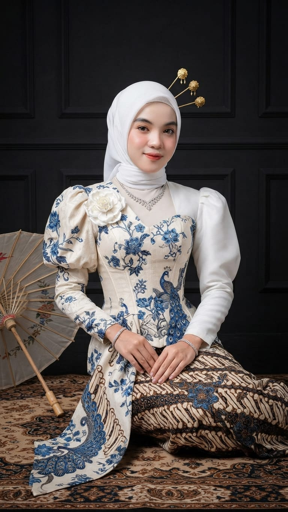
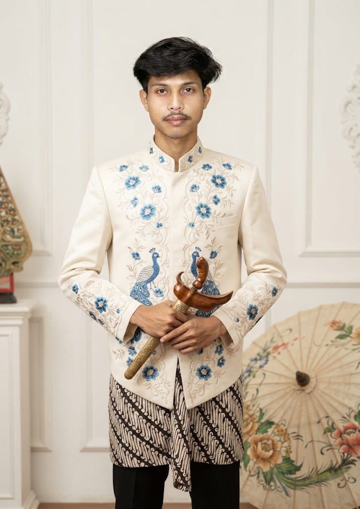
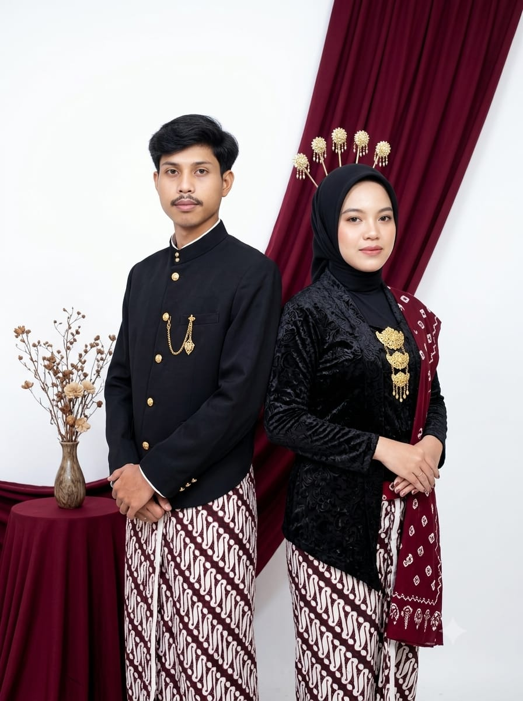
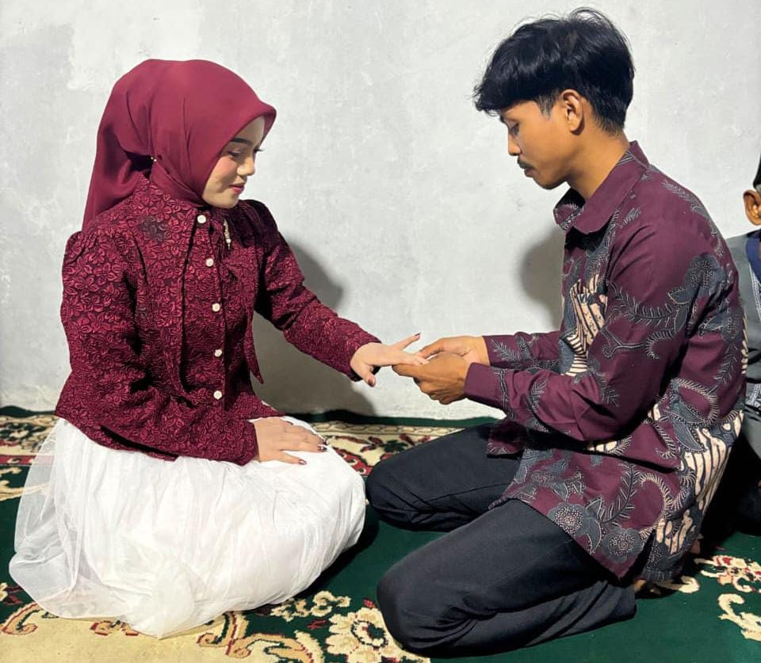

ASSALAMU’ALAIKUM WR. WB.
Dengan memohon rahmat dan ridho Allah SWT, kami bermaksud mengundang Bapak/Ibu/Saudara/i untuk menghadiri pernikahan kami:

Siti Daniati
Mempelai Wanita
Putri tercinta dari
Bpk. Dasim & Ibu Dasem

Pebri Mandala Putra
Mempelai Pria
Putra tercinta dari
Bpk. Gatot Priambodo & Ibu Ratemi
Pertama Kenal
Kami pertama kali kenal di aplikasi Facebook, saat itu sama-sama melajang. Awalnya aku bales inbox dia cuma iseng dan gak kepikiran buat deket.
Tapi komunikasi tetap berlanjut (singkat cerita) sampai di mana dia merencanakan pertemuan.
Pertama Jadian
Selang 1 minggu kemudian akhirnya kita bertemu di suatu cafe di daerah Loji. Awal pertama ketemu kita masih malu-malu kucing tapi lama kelamaan kita menjadi terbiasa.
Malam itu dia langsung nembak aku dan otomatis aku terima karna dia udah jauh-jauh dari Cibubur ke Karawang (sangat effort sekali hehe).
Perjalanan Hubungan
Singkat cerita cinta kami tumbuh meski terpisah ribuan kilometer, setiap video call malam adalah rumah kami.
Setelah 4 tahun LDR melewati rindu, kami percaya bahwa cinta yang paling indah bukan yang pertama tapi yang memilih untuk bertahan.

Menuju Ijab Kabul
Kini kami siap memulai episode baru dalam satu ikatan pernikahan dan kami ingin Anda hadir menjadi saksi di dalamnya.
